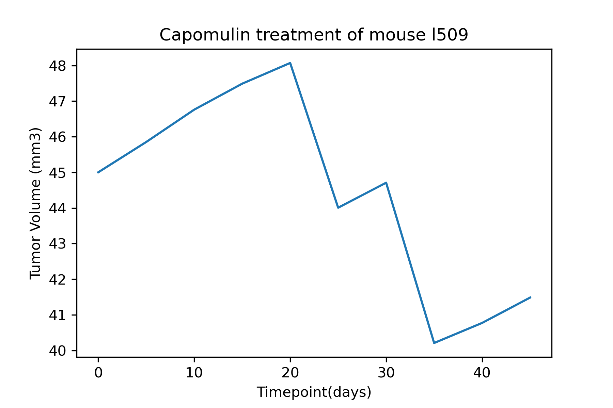
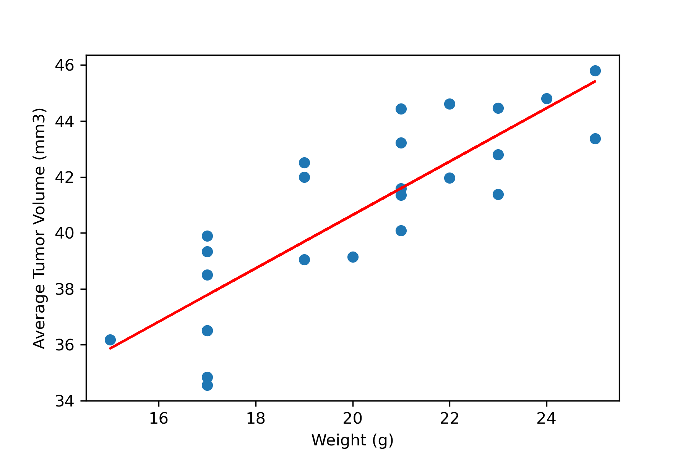

Matplotlib Challenge
Analysis and visualizations using a data set for 249 mice, with SCC tumor growth and a variety of drug regimes.
Observations and Insights : The best performing drug regimens were Capomulin, slightly second to Ramicane. Both drugs yielded far lower average tumor volume measurements, as well as a much lower range of tumor size measurements. A sample mouse's tumor treated with Capomulin began to yield positive results at roughly the middle timepoint of the study, when the tumor volume dropped dramatically below its original measurement. This progress was not linear. There is a strong association between weight and average tumor volume, within the Capomulin data. The weight of a given mouse was a potential predictor of smaller sized tumors.
Total number of mice for each treatment

Distribution of female versus male mice
Box plot of the final tumor volume of each mouse across four regimens of interest
Time point versus tumor volume for a mouse (l1509) treated with Capomulin
The correlation coefficient between weight and average tumor volume is 0.84
